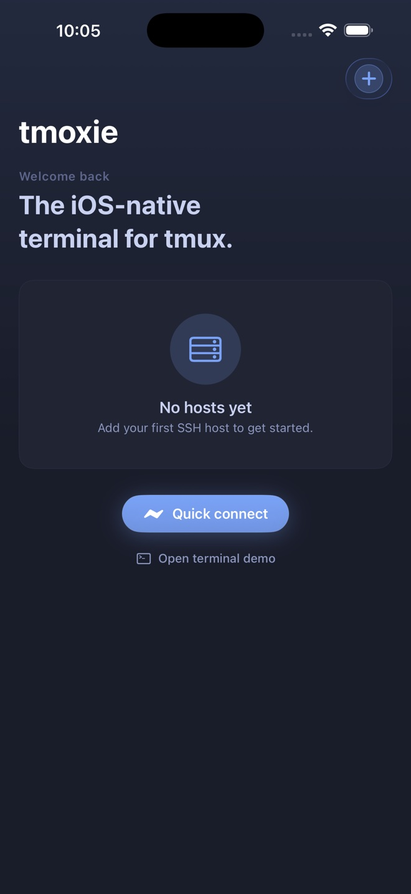
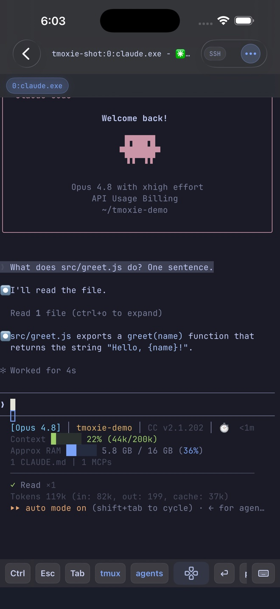

Quick start
This path gets you from a reachable machine to a reusable mobile coding setup. You need an iPhone with iOS 17 or later and a computer that accepts password-based SSH. For a home or private machine, Tailscale is the recommended way to make that SSH server reachable without exposing it to the public internet.
New to tmux
Install it, add the host, and let tmoxie create or attach the default session. You do not need to memorize terminal shortcuts first.
Already use tmux
Connect the host and your existing sessions appear as cards. Keep using the same sessions from your desktop and iPhone.
- Install tmux on the computer you want to control.
- For a private host, connect the iPhone and computer with Tailscale.
- Confirm that normal password-based SSH works.
- Save the machine as a host in tmoxie.
- Open the default session or one of your existing named sessions.
- Use the composer to send a prompt to the active agent.
- Pin the terminal keys you use most to Quick Bar.
Best habit: run long work inside tmux. Tailscale provides a private network path, SSH carries the connection, and tmux keeps the remote process alive while your phone sleeps or changes networks.
Prepare the remote host
Install tmux on the computer you connect to, not on the iPhone. tmoxie can open a plain SSH shell without it, but session cards, windows, panes, reconnect recovery, and per-window previews depend on tmux.
Ubuntu or Debian
sudo apt update
sudo apt install tmuxFedora or RHEL
sudo dnf install tmuxArch Linux
sudo pacman -S tmuxmacOS
brew install tmuxConfirm that the command is available and see the installed version:
command -v tmux
tmux -Vtmux in 90 seconds
A session is a durable workspace. Each session contains windows, and each window can contain one or more terminal panes. tmoxie turns that structure into session cards, window tabs, and touch-friendly pane controls.
You do not need to learn the classic Ctrl-b prefix to use tmoxie. The app maps common tmux actions to native controls and its tmux keyboard pad. The commands below are useful when you also work from a regular desktop terminal.
tmux new -s project- Create and enter a session named
project. - Ctrl-b, then d
- Detach from a regular desktop tmux client without stopping its programs.
tmux ls- List the sessions currently running on the machine.
tmux attach -t project- Reopen the named session from a regular terminal.
tmux kill-session -t project- Destroy the session and its programs when the work is truly finished.
You can create a named session yourself, or simply open a tmux-capable host in tmoxie. The app can create or attach its default tmoxie-home session and also lists the other sessions already running on that host.
Inside a session, change to the project directory and launch the terminal agent or command you normally use:
cd ~/code/my-project
# Start your preferred terminal agent hereWhat keeps running?
| Event | Session remains | What to expect |
|---|---|---|
| Switch apps or lock the iPhone | Yes | tmoxie reconnects when active again. |
| Wi-Fi or cellular changes | Yes | SSH reconnects, then tmoxie refreshes the tmux state. |
| Force quit tmoxie | Yes | The remote process stays inside tmux. |
| Kill the tmux session | No | The programs inside that session end. |
| Restart the remote computer | Not by default | Session restoration requires separate host setup. |
Current authentication: tmoxie supports SSH passwords. Public-key authentication is planned for a later release.
For more detail, use the official tmux installation guide and tmux getting started guide.
Reach a private computer with Tailscale
Tailscale is optional, but it is the simplest recommended path to a home server, desktop, or laptop that is not publicly reachable. It creates a private network between your devices. tmoxie then makes a normal SSH connection across that network.
- tmoxie on iPhoneStarts the connection
- TailscaleProvides the private route
- OpenSSHAuthenticates your host login
- tmuxKeeps sessions and agents running
- Install Tailscale on the iPhone and Tailscale on the remote computer.
- Sign in to the same tailnet on both devices and confirm that both appear connected.
- Make sure the computer's normal OpenSSH server is running and accepts your OS username and password. Test the same login from another SSH client on the tailnet when possible.
- Find the host's MagicDNS name, or run
tailscale ip -4on the host to get its private Tailscale address. - In tmoxie, add that name or
100.x.y.zaddress, port22, your OS username, and your SSH password.
Use normal SSH authentication: tmoxie does not currently authenticate through Tailscale SSH. Use Tailscale for the private network route, then connect to the computer's normal OpenSSH server with its OS username and SSH password.
Do not open port 22 on your home router just for tmoxie. Keep the SSH service private and connect through Tailscale or another VPN. If the host is already safely reachable, Tailscale is not required.
If the private host does not connect
- Open Tailscale on the iPhone first and confirm that both devices are online in the same tailnet.
- Confirm that the remote computer is awake and its SSH server is listening on the expected port.
- Try the raw
100.x.y.zTailscale address if the MagicDNS name does not resolve. - Verify the username and password with another SSH client.
- Allow a little extra time for the first connection after the phone or private tunnel has been asleep.
When another terminal is available, check each layer directly:
# On the remote computer
tailscale status
tailscale ip -4
command -v tmux
tmux -V
tmux list-sessions
# From another device in the same tailnet
ssh username@100.x.y.zThe official Tailscale IP address guide explains how device addresses work.
Add your first host
- From the Hosts screen, tap the add button.
- Enter a label, hostname or IP address, port, username, and password.
- Tap Save, then open the host.
- Compare the SSH host-key fingerprint with a trusted source before accepting it.

If a hostname does not resolve, try its raw IP address. For a Tailscale host, use its 100.x.y.z address. Confirm that the VPN or private network is active before connecting.
Resume a tmux session
After tmoxie connects, the Sessions screen shows the remote tmux sessions as cards with window and pane context.
- Tap the project session card.
- Swipe or tap the window tabs to move between tmux windows. Use the grid button beside the tabs to open Jump to window when the list is long.
- Tap a pane chip to focus it. Tap another chip to open a two-pane Glance, then tap either visible chip to return to one pane.
- Tap Minimize to return to session cards without closing the remote session.
tmoxie remembers the visible window for each session. Returning to that session should bring you back to the work you last viewed.
Minimize
Returns to the live session list. Remote programs keep running.
Full Screen
Choose it from the more menu to hide app chrome and give the terminal more room.
Send a prompt with the agent composer
Run your terminal coding agent on the remote host, inside tmux. tmoxie supports input for known agents such as Claude Code, Codex, and OpenCode. The agent runs on your machine, and its own account, installation, and usage terms still apply. For Herdr-based work, see the Herdr TUI reference.
Known agent panes open a local composer above the keyboard. The draft stays on your iPhone until you send it.
- Type or dictate the message in the composer.
- Paste or dictate a longer prompt when you need multiple lines.
- Tap the circular up-arrow, or use the keyboard’s Send key, to submit the complete draft.
Return sends from a hardware keyboard too. Collapse the composer when you need more terminal space. A saved draft remains available when you reopen it.

Make important keys one tap away
The fastest setup is a short Quick Bar for frequent actions, with pads for occasional tmux, agent, and navigation commands.
- Open Settings, scroll to Keyboard, then tap Customize bar.
- Choose Quick Bar for one-tap keys, or Pads for grouped controls.
- Tap Add shortcut to create a custom key or chord, or add an item from the searchable library.
- Tap Reorder and drag the handles so the most-used keys sit under your thumb.
- Tap an editable shortcut to change it, or swipe to delete it. Built-ins can be added again from the library.
Recommended layout: keep Escape, Tab, Control, arrows, and your most-used agent action in Quick Bar. Put the rest inside contextual pads. Shortcut customization is a Premium feature.
Pads are built-in groups. You can add, edit, reorder, and delete shortcuts inside them, then pin an individual pad shortcut to Quick Bar for one-tap access.
Send images and files to an agent
Attachments become remote files, and tmoxie inserts their path into the current composer draft so you can explain what the agent should do with them.
- Tap the paperclip in the composer.
- Choose Photo Library, Files, or Clipboard Image.
- Annotate an image when you need to point at a specific UI problem.
- Review the inserted remote path and add instructions.
- Tap Send when the draft is ready.
Uploads are temporary files under ~/.tmoxie-uploads on the selected remote host. Later uploads can remove older attachments. Keep a separate copy of files you need. Check the directory before removing sensitive uploads yourself:
du -sh ~/.tmoxie-uploads
find ~/.tmoxie-uploads -type f -mtime +7 -printIf you want to remove files older than seven days, review the printed list first, then run:
find ~/.tmoxie-uploads -type f -mtime +7 -deletePreview a remote web app
Start an HTTP development server on the remote loopback interface, then open it through the current SSH connection.
# Example only. Use your project's normal dev command.
npm run dev -- --host 127.0.0.1- Open the tmux window that owns the development server.
- Tap the globe button.
- Enter a port such as
3000, or an address such as127.0.0.1:3000/dashboard. - Edit the address to change destinations, or tap Reload to refresh the current page.
Each tmux window remembers its own successful preview address, so your frontend, API docs, and admin app can keep separate destinations. Web Preview currently supports HTTP loopback services, not HTTPS.
Leave and reconnect safely
iOS can suspend the SSH connection while tmoxie is in the background. tmoxie reconnects when the app becomes active and refreshes the remote tmux state.
- Keep long-running commands inside tmux.
- Wait for the reconnect indicator to finish before sending new input.
- If session cards look stale, pull down on the Sessions screen to refresh.
- If one pane looks incomplete, minimize the session and reopen it after reconnect finishes.
For deeper connection and rendering checks, use the support guide.